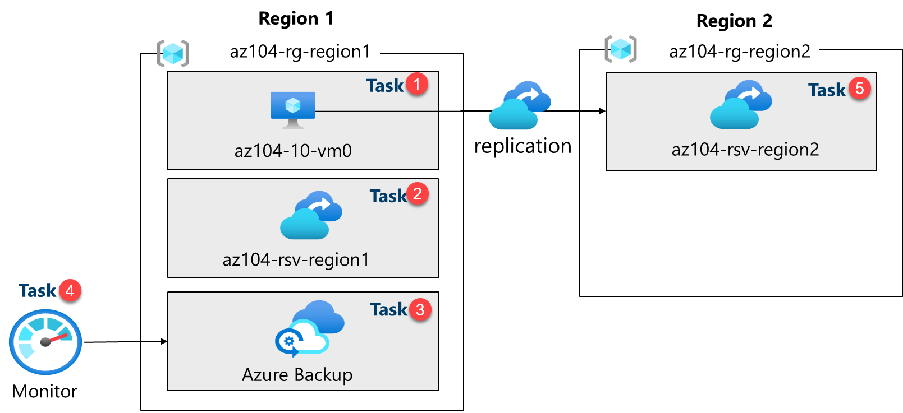

Lab - Implement Data Protection
Lab Introduction
In this lab, you learn about backup and recovery of Azure virtual machines. You learn to create a Recovery Service vault and a backup policy for Azure virtual machines. You learn about disaster recovery with Azure Site Recovery.
This lab requires an Azure subscription. Your subscription type may affect the availability of features in this lab. You may change the regions, but the steps are written using East US and West US.
Estimated Timing: 50 Minutes
Lab scenario
Adamantus Technologies is evaluating how to backup and restore Azure virtual machines from accidental or malicious data loss. Additionally, the organization wants to explore using Azure Site Recovery for disaster recovery scenarios.
Interactive Lab Simulation
There is an interactive lab simulation that you might find useful for this topic. The simulation lets you to click through a similar scenario at your own pace. There are differences between the interactive simulation and this lab, but many of the core concepts are the same. An Azure subscription is not required.
- Backup Virtual Machines and On-Premises Files. Create a recovery services vault and implement an Azure virtual machine backup. Implement on-premises file and folder backup using the Microsoft Azure Recovery Services agent. On-premises backups are outside the scope of this lab but it might be helpful to view those steps.
Job Skills
- Task 1: Use a template to provision an infrastructure.
- Task 2: Create and configure a Recovery Services vault.
- Task 3: Configure Azure virtual machine-level backup.
- Task 4: Monitor Azure Backup.
- Task 5: Enable virtual machine replication.
Estimated Timing: 40 Minutes
Architecture Diagram

Task 1: Use a Template to Provision an Infrastructure
In this task, you will use a template to deploy a virtual machine. The virtual machine will be used to test different backup scenarios.
-
⬇️ Download the ARM Template for Lab and ⬇️ Download the parameter file for Lab
-
Sign in to the Azure portal -
https://portal.azure.com. -
Search for and select
Deploy a custom template. -
On the custom deployment page, select Build you own template in the editor.
-
On the edit template page, select Load file.
-
Locate and select the az104-10-vms-edge-template.json file in your download directory and then select Open.
Note: Take a moment to review the template. We are deploying a virtual network and virtual machine so we can demonstrate backup and recovery.
-
Save your changes.
-
Select Edit parameters and then Load file.
-
Load and select the az104-10-vms-edge-parameters.json file from the download directory.
-
Save your changes.
-
Use the following information to complete the custom deployment fields, leaving all other fields with their default values:
Setting Value Subscription Your Azure subscription Resource group az104-rg-region1(If necessary, select Create new)Region East US Username localadmin Password Provide a complex password -
Select Review + Create, then select Create.
Note: Wait for the template to deploy, then select Go to resource. You should have one virtual machine in one virtual network.
Task 2: Create and configure a Recovery Services vault
In this task, you will create a Recovery Services vault. A Recovery Services vault provides storage for the virtual machine data.
-
In the Azure portal, search for and select
Recovery Services vaultsand, on the Recovery Services vaults blade, click + Create. -
On the Create Recovery Services vault blade, specify the following settings:
Settings Value Subscription the name of your Azure subscription Resource group az104-rg-region1Vault Name az104-rsv-region1Region East US Note: Make sure that you specify the same region into which you deployed virtual machines in the previous task.
-
Click Review + Create, ensure that the validation passes and then click Create.
Note: Wait for the deployment to complete. The deployment should take a couple of minutes.
-
When the deployment is completed, click Go to Resource.
-
In the Settings section, click Properties.
-
Select the Update link under Backup Configuration label.
-
On the Backup Configuration blade, review the choices for Storage replication type. Leave the default setting of Geo-redundant in place and close the blade.
Note: This setting can be configured only if there are no existing backup items.
Did you know? The Cross Region Restore option allows you to restore data in a secondary, Azure paired region.
-
Select the Update link under Security Settings > Soft Delete and security settings label.
-
On the Security Settings blade, note that Soft Delete (For workload running in Azure) is Enabled. Notice the soft delete retention period is 14 days.
Did you know? Azure has two types of vaults: Recovery Services vaults and Backup vaults. The main difference is the datasources that can be backed up.
Task 3: Configure Azure Virtual Machine-level Backup
In this task, you will implement Azure virtual-machine level backup. As part of a VM backup, you will need to define the backup and retention policy that applies to the backup. Different VMs can have different backup and retention policies assigned to them.
Note: Before you start this task, make sure that the deployment you initiated in the first task of this lab has successfully completed.
-
On the Recovery Services vault blade, click Overview, then click + Backup.
-
On the Backup Goal blade, specify the following settings:
Settings Value Where is your workload running? Azure (notice your other options) What do you want to backup? Virtual machine (notice your other options -
Select Backup.
-
Notice there a two Policy sub types: Enhanced and Standard. Review the choices and select Standard.
-
In Backup policy, select Create a new policy.
-
Define a new backup policy with the following settings (leave others with their default values):
Setting Value Policy name az104-backupFrequency Daily Time 12:00 AM Timezone the name of your local time zone Retain instant recovery snapshot(s) for 2 Days(s) -
Click OK to create the policy and then, in the Virtual Machines section, select Add (scroll down).
-
On the Select virtual machines blade, select az-104-10-vm0, click OK, and then back on the Backup blade, click Enable backup.
Note: Wait for the backup to be enabled. This should take approximately 2 minutes.
-
After the deployment, select Go to resource.
-
In the Protected items section, click Backup items, and then click the Azure virtual machine entry.
-
Select the View details link for az104-10-vm0, and review the values of the Backup Pre-Check and Last Backup Status entries.
Note: Notice the backup is pending.
-
Select Backup now, accept the default value in the Retain Backup Till drop-down list, and click OK.
Note: Do not wait for the backup to complete but instead proceed to the next task.
Task 4: Monitor Azure Backup
In this task, you will deploy an Azure storage account. Then you will configure the vault to send the logs and metrics to the storage account. This repository can then be used with Log Analytics or other third-party monitoring solutions.
-
From the Azure portal, search for and select
Storage accounts. -
On the Storage accounts page, select Create.
-
Use the following information to define the storage account, then and select Review + create.
Settings Value Subscription Your subscription Resource group az104-rg-region1 Storage account name Provide a globally unique name Region East US -
Select Create.
Note: Wait for the deployment to complete. It should take about a minute.
-
Search and select your Recovery Services vault.
-
In the Monitoring blade, select Diagnostic Settings and then select Add diagnostic setting.
-
Name the setting
Logs and Metrics to storage. -
Place a checkmark next to the following log and metric categories:
- Azure Backup Reporting Data
- Addon Azure Backup Job Data
- Addon Azure Backup Alert Data
- Azure Site Recovery Jobs
- Azure Site Recovery Events
- Health
-
In the Destination details, place a checkmark next to Archive to a storage account.
-
In the Storage account drop-down field, select the storage account that you deployed earlier in this task.
-
Select Save.
-
Return to your Recovery Services vault, in the Monitoring blade select Backup jobs.
-
Locate the backup operation for the az104-10-vm0 virtual machine.
-
View details (scroll to the right for the link) of the backup job.
Task 5: Enable Virtual Machine Replication
-
In the Azure portal, search for and select
Recovery Services vaultsand, on the Recovery Services vaults blade, click + Create. -
On the Create Recovery Services vault blade, specify the following settings:
Settings Value Subscription the name of your Azure subscription Resource group az104-rg-region2(If necessary, select Create new)Vault Name az104-rsv-region2Region West US Note: Make sure that you specify a different region than the virtual machine.
-
Click Review + Create, ensure that the validation passes and then click Create.
Note: Wait for the deployment to complete. The deployment should take a couple of minutes.
-
Search for and select the
az104-10-vm0virtual machine. -
In the Backup + Disaster recovery blade, select Disaster recovery.
-
Select Enable replication.
-
On the Basics tab, notice the Target region.
-
Select Next: Advanced settings. Resource selections have been made for you.
-
Scroll down and Create the automation account.
Note: It is important the settings be populated, or the validation will fail.
-
Select Review + Start replication and then Enable replication.
Note: Enabling replication will take a 10-15 minutes. Watch the notification messages in the upper right of the portal. While you wait, consider reviewing the self-paced training links at the end of this page.
-
Once the replication is complete, search for and locate your Recovery Services Vault, az104-rsv-region2. You may need to Refresh the page.
-
In the Protected items section, select Replicated items.
-
Check that the virtual machine is showing as healthy for the replication health. Note that the status will show the synchronization (starting at 0%) status and ultimately show Protected after the initial synchronization completes.
- Select the virtual machine to view more details.
Did you know? It is a good practice to test the failover of a protected VM.
Cleanup your Resources
If you are working with your own subscription take a minute to delete the lab resources. This will ensure resources are freed up and cost is minimized. The easiest way to delete the lab resources is to delete the lab resource group.
- In the Azure portal, select the resource group, select Delete the resource group, Enter resource group name, and then click Delete.
- Using Azure PowerShell,
Remove-AzResourceGroup -Name resourceGroupName. - Using the CLI,
az group delete --name resourceGroupName.
Key Takeaways
Congratulations on completing the lab. Here are the main takeaways for this lab.
- Azure Backup service provides simple, secure, and cost-effective solutions to back up and recover your data.
- Azure Backup can protect on-premises and cloud resources including virtual machines and file shares.
- Azure Backup policies configure the frequency of backups and the retention period for recovery points.
- Azure Site Recovery is a disaster recovery solution that provides protection for your virtual machines and applications.
- Azure Site Recovery replicates your workloads to a secondary site, and in the event of an outage or disaster, you can failover to the secondary site and resume operations with minimal downtime.
- A Recovery Services vault stores your backup data and minimizes management overhead.
Address: H-34, Ground Floor, Sector 63, Noida, Uttar Pradesh
Email: info@ceekh.com